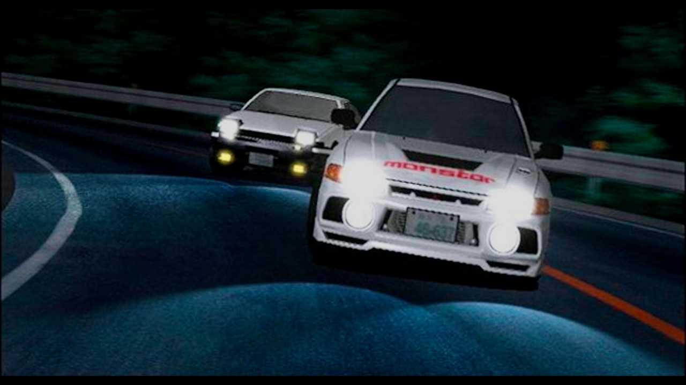
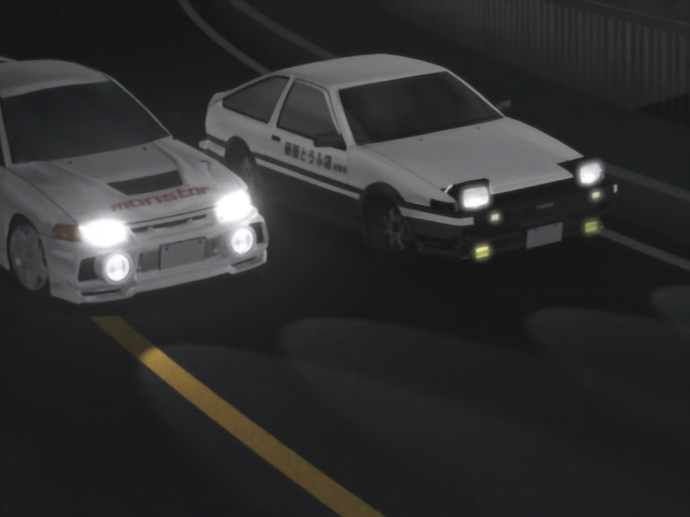

Ordem Cronológica
Second Stage
Um grupo de corredores de rua chamado Emperor, liderados pelo piloto Kyoichi Sudou aparece na província de Gunma. Todos os pilotos da Emperor pilotam Mitsubishi Lancer Evolution. Eles viajam por Gunma desafiando e vencendo os melhores equipes de cada montanha. Entretanto, o verdadeiro objetivo de Kyoichi é ter uma revanche contra Ryosuke Takahashi, sem saber que ele perdeu para Takumi. Quando Kyoichi descobre, os Emperor desafiam os Akina SpeedStars para uma corrida, na esperança de que Takumi corra com seu AE86. Takumi se torna a primeira pessoa de Gunma a vencer um membro o Emperor correndo na descida, após vencer o segundo melhor piloto da equipe, Seiji Iwaki.
Kyoichi desafia Takumi para uma batalha, para "ensinar algumas coisas" e também como um evento extra durante sua corrida contra Ryosuke. Apesar de desinteressado, Takumi decide ir para Akagi. Durante sua corrida contra Kyoichi, o motor do AE86 explode e fica destruído. Kyoichi, que logo em seguida perde para Ryosuke, ensina para Takumi sobre as desvantagens de pilotar um carro antigo nas corridas ilegais modernas. Ainda que a derrota não seja por causa da falta de potência do AE86, como Ryosuke explica, ela se deve ao fato de que Takumi nunca pilotou em Akagi e não sabe sobre a velocidade de entradas e coisas do tipo que ele poderia usar a seu favor, basicamente obrigando-o a pilotar às cegas na frente de um potente Mitsubishi Lancer Evolution III GSR (CE9A) equipado com o (Sistema anti-lag). Se Takumi conhecesse pelo menos um pouco o trajeto, a corrida provavelmente teria terminado diferente.
Bunta, sabendo que o motor do AE86 estava a ponto de estragar, comprou um motor novo - um motor de alta rotação, derivado do Toyota 4A-GE 20 valve twin cam , que é utilizado pelo Grupo A Divisão 2 Classe Turismo nas corridas do Japanese Touring Car Championship. Ele instala o motor sem um novo conta-giros para ensinar a Takumi a importância de aprender conhecimentos mecâncios e entender mais sobre o seu carro. Takumi encontra um piloto de AE86 chamado Wataru Akiyama, que reage com surpresa frente a falta de conhecimentos mecânicos de Takumi, explicando que o novo motor do AE86 é extremamente forte e precisa de um novo conta-giros.
Assim que Takumi consegue preparar o AE86, ele desafia Wataru para uma corrida em seu Curso local, Shoumaru. A corrida se torna uma disputa de resistência, durando diversas voltas até que Takumi consegue utilizar a pista a seu favor, ultrapassando Wataru em uma reta que achavam ser muito apertada para isso.
Carros presentes
- Nissan Skyline GT-R
- Toyota AE85
- Mazda RX-7
- Nissan 180SX
- Nissan Silvia
- Mitsubishi Lancer Evolution
- Toyota AE86

